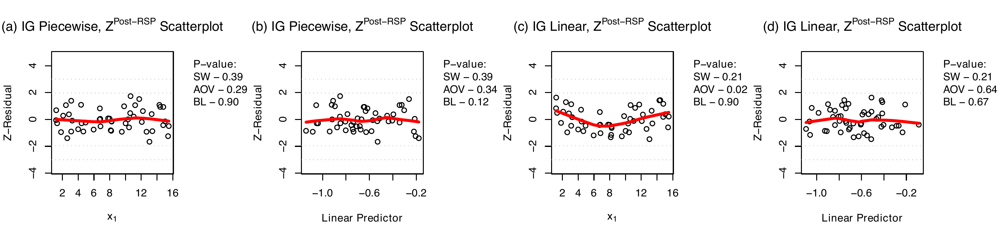
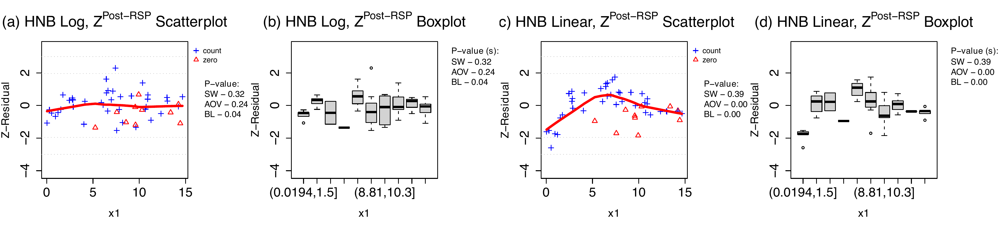
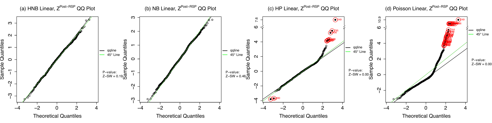
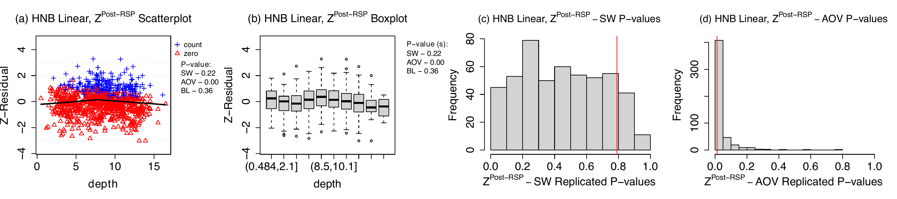
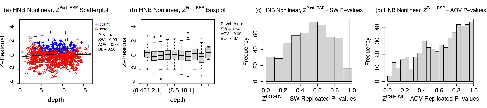

Z-residuals: A Versatile Diagnostic Framework for Bayesian Models
Outline
Introduction & Motivation
- The Diagnostic Gap in Bayesian Modeling
- Limitations of Posterior Predictive Checks (PPC)
Methodology: The Z-residual Framework
- Randomized Survival Probability (RSP)
- Posterior and ISCV Z-residuals
- Asymptotic Guarantees
Simulation Studies
- Continuous Inverse Gaussian Regression
- Discrete Hurdle Negative Binomial Regression
Application to a Zero-inflated Dolphin-Sighting Dataset
Conclusion & Future Directions
$$ % — Custom Commands for MathJax —
% Acronyms and Custom Text
% Math Symbols (Bold)
% General Superscripts and Subscripts
% Compound Superscripts for Z-residuals $$
Introduction
Where We Stand: Current Model Checking Methods
Frequentist Residual Diagnostics: In OLS, observation-level residuals play important roles for visualizing and quantifying overall and specific structural flaws (e.g., normality, nonlinearity, heteroskedasticity, spatial and temporal dependency).
The Gap in Assessing Bayesian Model:s This comprehensive diagnostic toolkit is largely unavailable for general Bayesian models
Limitations of Posterior Predictive Checks (PPC)
- Arbitrary Statistics: Operates on a test-first, then-summarize paradigm, requiring subjective choices for dataset-level discrepancy statistics.
- Masked Flaws: Relying on marginal distribution checks often fails to detect subtle covariate-specific or other structural misspecifications.
- Double-Use Bias: Evaluating the statistic on the exact data used for fitting degrades statistical power, causing p-values to cluster around 0.5.
- Trade-offs in Alternatives: Methods like holdout predictive checks (HPC) mitigate bias but sacrifice effective sample size and power.
Z-residual Diagnostics
- A Versatile Diagnostic Framework: Introduces observation-level residuals for Bayesian models based on Randomized Survival Probability (RSP).
- “Summarize-first, then-test”: Averages parameter-wise RSPs over the posterior (or LOO posterior) before transforming them into standard normal Z-residuals.
- Key Advantages of Z-residuals:
- Asymptotically Calibrated: Diagnostic p-values are uniformly distributed under the true model, overcoming PPC’s double-use bias.
- Diagnostic Richness: Enables the use of familiar graphical tools (scatterplots, QQ plots) and structural tests (ANOVA, Shapiro-Wilk) on a single set of residuals.
- Preserved Power: Utilizes the full sample size to detect model misspecifications without the reductions required by holdout methods.
Posterior Predictive Checks
Posterior Predictive P-value (\text{PPP})
- Concept: \text{PPP} is a goodness-of-fit measure comparing observed data (\boldsymbol{y}^{\text{obs}}) to replicated data (\boldsymbol{y}^{\text{rep}}) from the posterior predictive model. Good models generate replicates similar to the observed data.
- Discrepancy Statistic T(\boldsymbol{y}, \boldsymbol{\theta}): Summarizes specific data features (potentially depending on parameters \boldsymbol{\theta}). \text{PPP} is the probability that the replicated discrepancy exceeds the observed one: \text{PPP}= P(T(\boldsymbol{y}^{\text{rep}}, \boldsymbol{\theta}) > T(\boldsymbol{y}^{\text{obs}}, \boldsymbol{\theta}) \mid \boldsymbol{y}^{\text{obs}})
- A Key Simplification (Meng, 1994): If the discrepancy is a well-calibrated p-value, \mathcal{P}(\boldsymbol{y}, \boldsymbol{\theta}), its replicate is exactly \mathrm{Unif}(0,1). By the law of iterated expectations, \text{PPP} simplifies to the posterior average of observed p-values: \text{PPP}= \mathbb{E}(\mathcal{P}(\boldsymbol{y}^{\text{obs}}, \boldsymbol{\theta}) \mid \boldsymbol{y}^{\text{obs}})
Computing Procedures of PPP
Sample from Posterior: Begin with a set of posterior samples \{\boldsymbol{\theta}_{s}\}_{s=1}^S.
Compute Discrepancy Statistics: For each sample s, compute two statistics:
- Replicated Statistic (optional): T^{\text{rep}}_{s} calculated with \boldsymbol{y}_{s}^{\text{rep}} \sim p(\boldsymbol{y} \mid \boldsymbol{\theta}_{s})
- Observed Statistic: T^\text{obs}_{s} calculated with the actual data \boldsymbol{y}^\text{obs}
Aggregate & Compare: Collect all S results and calculate the proportion of draws where the replicated statistic is greater than or equal to the observed statistic; alternatively, calculate the posterior mean of p-values:
\widehat{\text{PPP}} = \frac{1}{S} \sum_{s=1}^{S} I(T_{s}^{\text{rep}} \ge T_{s}^\text{obs}), \text{or, } \widehat{\text{PPP}}= \frac{1}{S}\sum_{s=1}^{S} \mathcal{P}(\boldsymbol{y}^{\text{obs}},\boldsymbol{\theta}^{(s)})
Limitations of PPC and HPC
Arbitrary Discrepancy Measures: The selection of the test statistic, T(\boldsymbol{y}, \boldsymbol{\theta}), is inherently arbitray, lacking guidelines from data fitting results.
Masking of Structural Flaws: Relying on simple, marginal statistics (e.g., mean, median, or standardized deviations as used in \chi^2 statistic) can yield a “passing” score while hiding critical deficiencies like misspecified covariate functional forms.
The “Test-First, Then-Summarize” Paradigm: Computing dataset-level discrepancies for every MCMC draw evaluates the model against its exact training data, severely exacerbating double-use bias.
Poor Calibration & Low Power: Due to double-use bias, PPC p-values (especially \chi^2) are rarely uniform under the null. They artificially cluster around 0.5, crippling the test’s power to detect true model misfit.
The Holdout Predictive Check (HPC) Compromise: Recently proposed to replace PPCs, HPC splits the data into training and test sets to eliminate double-use bias. However, this data-splitting drastically reduces the effective sample size, leading to a severe loss of statistical power and instability in the evaluation.
The Z-residual Framework
Randomized Survival Probability (RSP)
- For an observed y_i, the parameter-wise RSP is: \text{RSP}_i(y_i \mid \boldsymbol{\theta}) = S_i(y_i \mid \boldsymbol{\theta}) + U_i \cdot p_i(y_i \mid \boldsymbol{\theta})
- S_i: Survival function P(Y_i > y_i \mid \boldsymbol{\theta})
- p_i: Probability mass function P(Y_i = y_i \mid \boldsymbol{\theta})
- U_i \sim \text{Unif}(0,1): Auxiliary randomization
- Auxilliary Randomization U_i
- Continuous: p_i = 0, simplifies to the standard probability integral transform.
- Discrete: Randomization ensures exact uniform distribution on [0,1]. Essentially, the randomization recovers the continuous latent constructs of a discrete y_i by injecting random noise.
The Parameter-wise Z-residual
- Transform the uniform RSP into a standard normal residual using the inverse-survival function of N(0,1): z_i^{\text{RSP}}(y_i \mid \boldsymbol{\theta}) = -\Phi^{-1}(\text{RSP}_i(y_i \mid \boldsymbol{\theta}))
- Interpretation:
- Negative sign preserves traditional residual direction (larger observations = positive residuals).
- Represents distance from y_i to its predictive median, rescaled for skewness and smoothed for discreteness.
- Under the true model, z_i^{\text{RSP}}(y_i \mid \boldsymbol{\theta}) \sim N(0,1)
Illustration with Animation
Accounting for Uncertainty: Posterior Z-residuals
- In Bayesian contexts, \boldsymbol{\theta} is unknown. We average the pointwise RSP over the posterior distribution \pi(\boldsymbol{\theta} \mid \mathbf{y}).
- Posterior RSP: \widehat{\text{RSP}}_i^{\text{post}}(y_i) = \frac{1}{T} \sum_{t=1}^T \text{RSP}_i(y_i \mid \boldsymbol{\theta}^{(t)})
- Posterior Z-residual: z_i^{\text{post}}(y_i) = -\Phi^{-1}\left(\widehat{\text{RSP}}_i^{\text{post}}(y_i)\right)
Mitigating Double-use: ISCV Z-residuals
- Posterior Z-residuals use \mathbf{y} twice. To mitigate finite-sample bias, we approximate Leave-One-Out (LOO) cross-validation via Importance Sampling (ISCV).
- ISCV RSP: Weighted average using inverse-likelihood weights w_i^{\text{IS}}(\boldsymbol{\theta}^{(t)}) = 1 / f_i(y_i \mid \boldsymbol{\theta}^{(t)}). \widehat{\text{RSP}}_i^{\text{ISCV}}(y_i) = \frac{\sum_{t=1}^T \left[ \text{RSP}_i(y_i \mid \boldsymbol{\theta}^{(t)}) w_i^{\text{IS}}(\boldsymbol{\theta}^{(t)}) \right]}{\sum_{t=1}^T w_i^{\text{IS}}(\boldsymbol{\theta}^{(t)})}
- ISCV Z-residual: z_i^{\text{ISCV}}(y_i) = -\Phi^{-1}\left(\widehat{\text{RSP}}_i^{\text{ISCV}}(y_i)\right)
A Paradigm Shift
| Feature | Posterior Predictive Checks (PPC) | Z-residuals Diagnostics |
|---|---|---|
| Workflow | Test-first, then-summarize | Summarize-first, then-test |
| Mechanics | Compute stat T for every MCMC draw, average p-values. | Average probabilities over MCMC draws, compute single set of Z. |
| Calibration | Poor (conservative bias scaling with p). | Asymptotically uniform/normal. |
| Power | Low | High (full sample size used). |
| Versatility | Limited structural targeted checks. | Enables AOV, SW, heteroskedasticity tests analogous to OLS. |
Computing Procedures
PPC with Parameter-wise Z-residuals
| y_1 | y_2 | \cdots | y_n | |||
|---|---|---|---|---|---|---|
| \boldsymbol{\theta}^{(1)} | z_1^{\text{RSP}}(y_1 \mid \boldsymbol{\theta}^{(1)}) | z_2^{\text{RSP}}(y_2 \mid \boldsymbol{\theta}^{(1)}) | \cdots | z_n^{\text{RSP}}(y_n \mid \boldsymbol{\theta}^{(1)}) | \xrightarrow{\text{Test}} | p_1^{\text{obs}} |
| \boldsymbol{\theta}^{(2)} | z_1^{\text{RSP}}(y_1 \mid \boldsymbol{\theta}^{(2)}) | z_2^{\text{RSP}}(y_2 \mid \boldsymbol{\theta}^{(2)}) | \cdots | z_n^{\text{RSP}}(y_n \mid \boldsymbol{\theta}^{(2)}) | \xrightarrow{\text{Test}} | p_2^{\text{obs}} |
| \vdots | \vdots | \vdots | \ddots | \vdots | \vdots | |
| \boldsymbol{\theta}^{(T)} | z_1^{\text{RSP}}(y_1 \mid \boldsymbol{\theta}^{(T)}) | z_2^{\text{RSP}}(y_2 \mid \boldsymbol{\theta}^{(T)}) | \cdots | z_n^{\text{RSP}}(y_n \mid \boldsymbol{\theta}^{(T)}) | \xrightarrow{\text{Test}} | p_T^{\text{obs}} |
| \downarrow | ||||||
| PPP |
Z-Residual Diagnostics
| y_1 | y_2 | \cdots | y_n | |||
|---|---|---|---|---|---|---|
| \boldsymbol{\theta}^{(1)} | \text{RSP}_1(y_1 \mid \boldsymbol{\theta}^{(1)}) | \text{RSP}_2(y_2 \mid \boldsymbol{\theta}^{(1)}) | \cdots | \text{RSP}_n(y_n \mid \boldsymbol{\theta}^{(1)}) | ||
| \boldsymbol{\theta}^{(2)} | \text{RSP}_1(y_1 \mid \boldsymbol{\theta}^{(2)}) | \text{RSP}_2(y_2 \mid \boldsymbol{\theta}^{(2)}) | \cdots | \text{RSP}_n(y_n \mid \boldsymbol{\theta}^{(2)}) | ||
| \vdots | \vdots | \vdots | \ddots | \vdots | ||
| \boldsymbol{\theta}^{(T)} | \text{RSP}_1(y_1 \mid \boldsymbol{\theta}^{(T)}) | \text{RSP}_2(y_2 \mid \boldsymbol{\theta}^{(T)}) | \cdots | \text{RSP}_n(y_n \mid \boldsymbol{\theta}^{(T)}) | ||
| \downarrow | \downarrow | \downarrow | ||||
| z_i^{\text{RSP}} | z^{\text{RSP}}_1(y_1) | z^{\text{RSP}}_2(y_2) | \cdots | z^{\text{RSP}}_n(y_n) | \xrightarrow{\text{Test}} | Z^{\text{RSP}} p-value |
Asymptotic Properties of Posterior and ISCV Z-residuals
Theorem 1 (Total variation convergence of the LOO predictive distribution, informal statement). Let Y_1,\dots,Y_{n+1} be independent with true densities f_i^{(*)}, and suppose the model \{f_i(\cdot\mid\theta):\theta\in\Theta\} with prior \Pi is well-specified, so that the true parameter set W_0=\{\theta\in\Theta: f_i(\cdot\mid\theta)=f_i^{(*)} \text{ for all } i\} is non-empty. Assume standard regularity conditions ensuring posterior consistency and predictive continuity (specifically, conditions (i)–(v) of supplementary §S-supp:proofs). Under these conditions, the LOO predictive distribution P_i^{(n),\mathrm{CV}} converges to the true distribution P_i^{(*)} in total variation, in probability: for each fixed i,
\big\Vert{}P_i^{(n),\mathrm{CV}}-P_i^{(*)}\big\Vert{}_{\mathrm{TV}} \xrightarrow{P} 0 \quad \text{as } n\to\infty.
Because each observation’s RSP is computed from a predictive distribution that converges to the truth, the RSPs themselves inherit the correct limiting behavior, not only marginally but also jointly across observations:
Theorem 2 (Asymptotic independence of cross-validated RSPs). Under the assumptions of Theorem S-thm:loo-pred-tv-formal-w0, for any fixed pair of distinct indices i \neq j, the cross-validated RSPs converge jointly in distribution to a pair of independent standard uniform random variables: as n\to\infty,
\big(\mathrm{RSP}_i^{(n),\mathrm{CV}},\, \mathrm{RSP}_j^{(n),\mathrm{CV}}\big) \ \Rightarrow\ \big(\mathrm{Uniform}(0,1),\,\mathrm{Uniform}(0,1)\big),
where the two limiting uniform variables are independent.
Summarizing Replicated Test p-values
- For discrete data, auxiliary randomization \mathbf{U} means test p-values vary across random seeds.
- Solution: Redraw \mathbf{U} J times, yielding replicated p-values \{p_j(\mathbf{y})\}_{j=1}^J.
- We derive a distribution-free upper-bound for the order statistic (e.g., median): P\{p_{(r)}(\mathbf{y}) \le t\} \le H_{J,r} \cdot t
- The value of H_{J,r} can be computed using numerical optimization. For the median (r=\lceil J/2\rceil), H_{100,50}\approx 1.65, and H_{500,250}\approx 1.80.
- Yields a single, super-uniform p-value summary without requiring nested MCMC simulations.
Simulation Studies
Simulation 1: Inverse Gaussian (IG) Regression
- Setup: Continuous data. n \in \{50, 100, 200\}. No auxiliary randomization needed.
- DGP: True model has a piecewise quadratic effect for covariate X_1.
- Fitted Models:
- Correct: Piecewise IG model.
- Misspecified: Linear IG model (misses the nonlinear effect of X_1).
- Goal: Evaluate capability to detect specific functional-form misspecifications.
Visual Diagnostics (IG, n=50)

- Correct Model (a)(b): No trend against X_1 or fitted values.
- Misspecified Model (c)(d): Clear nonlinear pattern against X_1 (c), but masked when plotted against the overall linear predictor (d). Covariate-specific plots are essential.
Empirical p-value Distributions (IG)

- Blue = Correct Model, Red = Misspecified Model.
- Z-residual AOV tests (e, f) are uniform under correct model, strongly concentrated near zero under wrong model. SW/\chi^2 lack power.
Rejection Rates & Power (IG)

- Z-AOV (b) maintains nominal \alpha=0.05 (black) and achieves rapidly increasing power (red) as n grows.
- Traditional SW (a) and \chi^2 (c) fail to detect localized mean misspecification.
Simulation 2: Hurdle Negative Binomial (HNB)
- Setup: Discrete count data with excess zeros (\approx 30\%). n \in \{50, 100, 200\}. Requires auxiliary randomization U.
- DGP: True model has a logarithmic effect \log(X_1) in the count component.
- Fitted Models:
- Correct: Logarithmic HNB.
- Misspecified: Linear HNB.
- Goal: Detect nonlinear mean misspecification in zero-inflated count data.
Visual Diagnostics (HNB, n=50)

- Top (Correct): Residuals scattered, boxplots homogeneous across X_1 bins.
- Bottom (Misspecified): Pronounced grouped mean differences across X_1. Detected by AOV grouped test.
Empirical p-value Distributions (HNB)

- AOV tests (e, f) based on posterior/ISCV Z-residuals remain well calibrated (blue) and highly powerful (red). PPC and HPC methods cluster near 0.5 under the null.
Rejection Rates & Power (HNB)

- Z-AOV maintains low Type-I error rates (black) and achieves nearly 100\% power for n \ge 100 (red). PPC AOV performs well but lags at smaller sample sizes.
Real-World Application
Dolphin-Sighting Dataset
- Data: n=936 observations, estuarine–coastal gradient.
- Response: Count of dolphin sightings (extremely sparse, \sim 75\% zeros).
- Covariates: Water depth, temperature, distance to river mouth, salinity, turbidity, year, location.
- Initial Strategy: Fit linear models across 4 families:
- Hurdle Poisson, Hurdle Negative Binomial (HNB)
- Poisson, Negative Binomial (NB)
Overall Goodness-of-Fit (Linear Models)

- Result: HNB (a) and NB (b) show adequate overall fit (adhering to diagonal, SW p \ge 0.05). Poisson models (c, d) fail dramatically due to unmodeled overdispersion.
Detecting Nonlinearity in Depth

- Plotting linear HNB Z-residuals against
depthreveals a clear U-shape (a) and heterogeneous grouped boxplots (b). - AOV test confirms severe non-linearity (median upper-bound p-value = 0.012).
The Refined Nonlinear Model

- Refinement: Added piecewise quadratic effect for
depthbased on visual turning point at 7.95m. - Result: Patterns eliminated. Scatterplot and boxplots are homogeneous. AOV test p-value climbs to 1.00.
Model Comparison
| Family | Model Type | Z-SW p | Z-AOV p | \Delta_{\text{elpd}} (LOO) |
|---|---|---|---|---|
| HNB | Nonlinear | 1.000 | 1.000 | 0.0 |
| HNB | Linear | 0.790 | 0.012 | -19.9 |
| NB | Nonlinear | 0.337 | 0.760 | -34.0 |
| NB | Linear | 0.299 | 0.010 | -42.5 |
| HP | Linear | <0.01 | 0.020 | -118.6 |
- The Nonlinear HNB model satisfies all diagnostic checks and significantly outperforms all other models out-of-sample.
- The nonlinear effect primarily acts on the hurdle component (zero-inflation probability increases away from 7.95m depth).
Conclusion & Future Directions
Summary of Contributions
- Methodological Shift: Transitioned from “test-first, then summarize” (PPC) to “summarize-first, then test” (Z-residuals).
- Asymptotic Calibration: Posterior and ISCV Z-residuals converge to standard normal, ensuring well-calibrated p-values.
- Diagnostic Versatility: Enables targeted tests (AOV, SW) that uncover structural flaws (like functional form misspecification) which omnibus checks miss.
- Preserved Power: Uses full sample size without holdout reductions.
Limitations & Future Directions
- Limitations:
- Strict observation-level focus: Insensitive to internal/latent structure misspecifications (hierarchical effects, priors).
- Future Work:
- Extend framework to internal model components (synergizing with Uniform Parametrization Checks).
- Expand the suite of targeted Z-residual tests (e.g., spatial dependence, formal e-values for multiple testing correction).
- Improve computational efficiency for summarizing simulated p-values over auxiliary \mathbf{U}.
Questions?
Thank you.
Paper: “Z-residuals: A Versatile Diagnostic Framework for Bayesian Models”